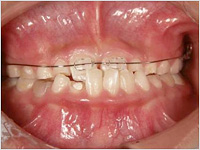
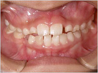
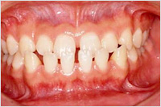
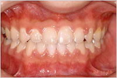
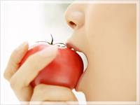
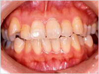
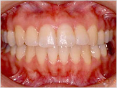

矯正歯科
お子様の歯列矯正
将来、美しい歯並び、正しい噛み合わせするためには、 幼少時代からお子様の成長発育を促し見守ることが大切になってきます。
顎が十分に成長しきっていない子供のころから矯正を始めることで、 顎の成長をうまくコントロールすることができ、きれいな歯並び、正しい咀嚼機能が得られます。 また、顎のズレによる咀嚼機能障害などが起こった場合にも抜歯の可能性が低くなるなどといったメリットもあるのです。 高知県高知市にある六泉寺歯科では、お子様それぞれの症例に合わせて最適な歯列矯正をご提案しております。
お子様の歯並び、気になりませんか？
顎の成長過程で幼少時代に悪い歯並びや噛みぐせを放っておくと、顎が異常な発育をし、 顎の運動や顔の形に影響が出ることがあります。 上下の顎がズレることによって起こる口元や身体の変化に対しては、 乳歯の生えている乳幼児時期からの治療が効果的です。 当医院では早い時期に矯正を始めることで、顎の成長を適切に誘導していきます。 また、正常な噛み合わせを得られる可能性が高くなります。
小児矯正（咬合誘導）

術前

術後
成長期矯正

術前

術後
大人の歯列矯正

最近、歯並びや歯の審美性への関心が高い方が非常に多くなってきております。 歯並びをきれいにすることは、単に見た目だけの問題ではなく、虫歯や歯周病の予防などにも有効です。 口は、はじめに食物が入る消化器官です。お口の中を健康に保つ事が、健康の第一歩となるのです。
成人矯正

術前

術後
矯正歯科治療料金表
| 矯正 | 費用 | 詳細 |
|---|---|---|
| 部分矯正 | 100,000～ | 調整・管理料月に3,000円かかります。 |
| 全顎矯正 | 700,000～ |
※上記価格はすべて税抜です。